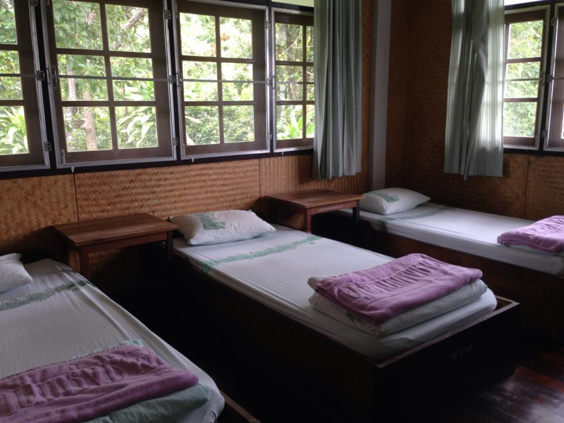

A LITTLE PLAN. A LONG WAY.
เก็บแผนดี ๆ
ก่อนออกเดินทาง
รวมข้อมูลอุทยาน ที่พัก และงบประมาณไว้ด้วยกัน
เพื่อให้ทุกทริปเริ่มต้นง่ายขึ้นอีกนิด
THE NEXT PLACE TO GO
เลือกจุดหมาย แล้วค่อย ๆ วางแผน

ลำพูน · ลำปางอุทยานแห่งชาติดอยขุนตาล
Doi Khun Tan
บ้านกลางป่า ลานสน และเช้าวันใหม่ที่ ย.4
สำรวจที่พักบนแผนที่ แล้วเลือกแผนที่เหมาะกับทริปของคุณ
ข้อมูลบ้านพัก 14 ต.ค. 2569เปิดบันทึก
ค่อย ๆ เก็บข้อมูลทีละจุดหมาย สำหรับการเดินทางครั้งถัดไป
BEFORE YOU GO
มีแผนไว้ แล้วออกไปเจอของจริง
บันทึกนี้รวบรวมข้อมูลเพื่อช่วยเลือกที่พักและวางงบเดินทาง ราคา ระยะทาง และเงื่อนไขต่าง ๆ เป็นข้อมูลอ้างอิง ควรตรวจสอบกับอุทยานและระบบจองก่อนเดินทางทุกครั้ง